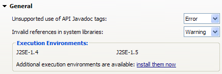

PDE
A new preference page supports managing and editing of multiple target platforms (Plug-in Development > Target Platform (Experimental)). The page displays all targets defined in the workspace. You can change the target platform used build workspace plug-ins by checking it in the table.

A wizard is used to add and edit target platform definitions. You can seed a target platform from existing templates (for example, an RCP application), default settings, current target platform settings, or start from scratch. Target definitions created from the preference page are stored locally with workspace metadata.

The content page is used to modify the name, description, plug-ins, and environment settings associated with a target.

You can add plug-ins to a target definition from various sources: a directory, an installation (for example, an Eclipse SDK), a feature, or an update site.

You can select specific plug-ins to include from each source (for example, a directory), by pressing "Edit...". You can choose to include plug-ins by name and/or version. When a version is not specified the plug-in with the highest version identifier is used.

The old preference page will be removed in future milestones and for the Galileo release.
The target editor has been enhanced to support new features in target definitions. Targets now support installation based locations (in addition to directories and features). As well, the editor support retrieval of plug-ins from update sites. The wizards used to add content to a target definition are the same as described in the new target platform preference page (above).

To support new features, the underlying target file format has been enhanced. The new editor continues to read old target files, but only writes files in the new format.
API tools analyzes use of system libraries and creates problems when code accesses members that may not be present at runtime. For example, when a plug-in specifies a required execution environment of J2SE-1.4, but the only JRE installed in the workspace for building is J2SE-1.6, it is possible to access methods that exist in 1.6, but not in 1.4. In order for the validation to work, you must install relevant execution environment descriptions from an update site.

The API Errors/Warnings preference page displays installed execution environments. Use the "install them now" hyperlink to install additional environments via the software updates dialog.
You can now launch JUnit Plug-in tests in a non-UI thread. A check box has been added to the Test tab to specify whether tests should run in the UI thread.

Eclipse Application launch configurations now support start levels and auto-start settings. You can specify default start levels and auto-start settings for all plug-ins in the configuration, and provide specific settings for others by selecting the plug-in in the list.